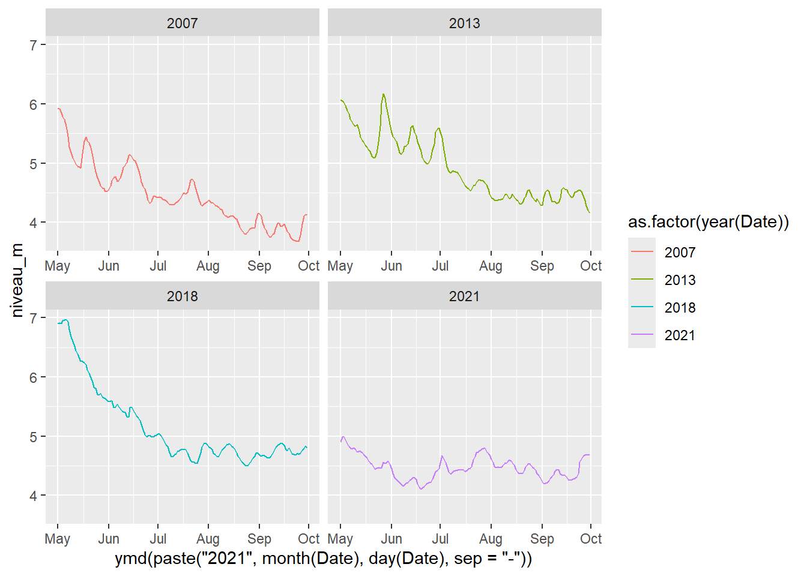

Planification
Définition du projet
Objectifs et sous-objectifs
Évaluer la performance de prédiction de la présence de végétation aquatique submergée (VAS) dans les différents tronçons fluviaux du fleuve Saint-Laurent à l’aide des données RSI.
Modéliser statistiquement la relation entre la profondeur et la disponibilité en lumière pour les différents tronçons fluviaux du fleuve Saint-Laurent.
Évaluer l’importance de la variabilité physico-chimique / optique de l’eau dans la prédiction de la présence de VAS dans le cas du lac Saint-Pierre, via l’intégration des masses d’eau dans le modèle prédictif.
…
Évaluer l’importance de la phénologie de la turbidité et du niveau d’eau dans la prédiction de la couverture de VAS dans le lac Saint-Pierre, un tronçon particulièrement dynamique.
Estimer la variabilité saisonnière de la turbidité au lac Saint-Pierre via télédétection satellitaire optique.
- Comment la présence de VAS affecte l’estimation de la turbidité?
Dresser un portrait saisonnier de la turbidité, du niveau d’eau et de la température de l’eau pour les années d’observations RSI au lac Saint-Pierre.
Modéliser l’importance des variations spatiotemporelles physico-chimiques du milieu à l’échelle annuelle pour la prédiction de la présence de VAS au lac Saint-Pierre.
…
Plan d’analyse
Objectif 1
Évaluer la performance de prédiction de la présence de végétation aquatique submergée dans les différents tronçons fluviaux du fleuve Saint-Laurent à l’aide des données RSI.
Modéliser statistiquement la relation entre la profondeur et la disponibilité en lumière pour les différents tronçons fluviaux du fleuve Saint-Laurent.
Évaluer l’importance de la variabilité physico-chimique / optique de l’eau dans la prédiction de la présence de VAS dans le cas du lac Saint-Pierre, via l’intégration des masses d’eau dans le modèle prédictif.
Cet objectif a été réalisé majoritairement dans le contexte du RIVE hacking 2024, à la maison Gault.
Équipe responsable: Arthur de Grandpré, Gilbert Cabana, Thibault Tournadre, avec contribution de Martin Laporte et Charles Martin
Data:
Base de données du Réseau de Suivi Ichtyologique (RSI; MELCCFP)
Description des analyses:
Modélistion statistique non linéaire des effets de la profondeur (au zéro bathymétrique ou brute?) et de la disponibilité en lumière (turbidité, ou Secchi) par modèles additifs généralisés (GAM).
Effets fixes: Profondeur, Secchi, Interaction Profondeur-Secchi
Effets aléatoires: Années, Secteurs, Masse d’eau
Objectif 2
Évaluer l’importance de la phénologie de la turbidité et du niveau d’eau dans la prédiction de la couverture de VAS dans le lac Saint-Pierre, un tronçon particulièrement dynamique.
Estimer la variabilité saisonnière de la turbidité au lac Saint-Pierre via télédétection satellitaire optique.
- Comment la présence de VAS affecte l’estimation de la turbidité?
Dresser un portrait saisonnier de la turbidité, du niveau d’eau et de la température de l’eau pour les années d’observations RSI au lac Saint-Pierre.
Modéliser l’importance des variations spatiotemporelles physico-chimiques du milieu à l’échelle annuelle pour la prédiction de la présence de VAS au lac Saint-Pierre.
Cet objectif est réalisé dans un contexte de collaboration plus large avec l’équipe du Pr. Alexandre Roy (UQTR) et du DEFA (MELCCFP), principalement via l’implication de Jawad Ziyad (Postdoc).
Équipe responsable: Arthur de Grandpré et Jawad Ziyad, avec contribution de Martin Laporte, Charles Martin, Alexandre Roy, Rémy Pouliot, Philippe Brodeur
Évaluer l’importance de la phénologie de la turbidité et du niveau d’eau dans la prédiction de la couverture de VAS dans le lac Saint-Pierre, un tronçon particulièrement dynamique.
Estimer la variabilité saisonnière de la turbidité au lac Saint-Pierre via télédétection satellitaire optique.
- Comment la présence de VAS affecte l’estimation de la turbidité?
Dresser un portrait saisonnier de la turbidité, du niveau d’eau et de la température de l’eau pour les années d’observations RSI au lac Saint-Pierre.
Modéliser l’importance des variations spatiotemporelles physico-chimiques du milieu à l’échelle annuelle pour la prédiction de la présence de VAS au lac Saint-Pierre.
Data:
Base de données du Réseau de Suivi Ichtyologique (RSI; MELCCFP), secteur lac Saint-Pierre uniquement (voir objectif 1)
Turbidité estimée par télédétection optique (détails)
NOTE : EFFET OMBRES / NUAGES 070508 À VÉRIFIER
Niveau d’eau mesuré à la bouée de Lanoraie (SOREL INCOMPLET ENTRE 2010 ET 2013?)

Description des analyses:
Calendrier
14 novembre: update meeting